Persistent for ADALM-PLUTO SDR
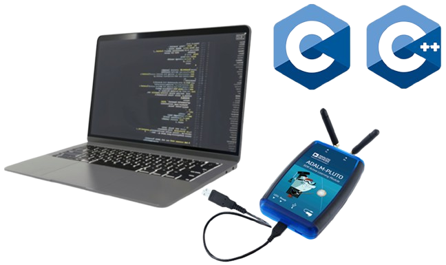
To access the operating system and the overall firmware of an ADALM-PLUTO SDR, SSH (Secure Shell) is a recommended approach. This approach also provides a way into executing custom applications locally on the Pluto SDR (for example: pre-compiled applications written in C programming language). In some cases, these applications may require communication with the host computer. Whenever the host computer attempts to communicate with the Pluto SDR, especially through loading files into the Pluto SDR firmware, the host computer must undergo an authentication process with the Pluto SDR.
The authentication process involves two stages through which firstly, it is verified by the host computer whether the specific Pluto SDR concerned falls among the “known hosts” and secondly, a username and password-based authentication (an example is shown in Figure 1). Generally, the username and password are set to “root” and “analog” respectively, unless otherwise changed. However, for fast and direct communication between the host computer and the Pluto SDR, persistent SSH connections are required. Specifically, persistent SSH connections enable seamless communication between the host computer and the Pluto SDR without having to go through the two authentication stages [1].
A complete guide with the prerequisites, configuration steps and a working example are provided below.
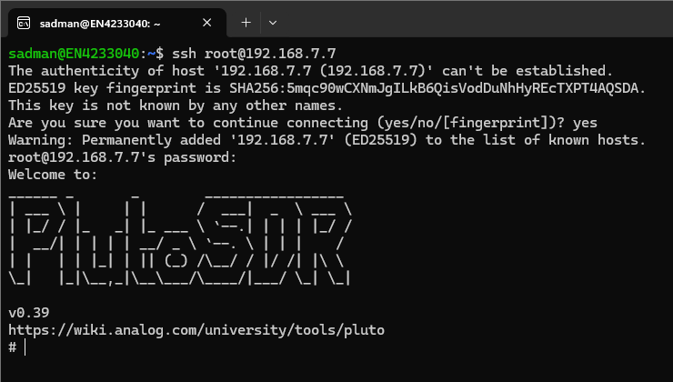
Prerequisites:
Host computer: Windows (x86) or Linux (x86 or ARM) or Raspberry Pi computer.
Pluto SDR: An ADALM-Pluto SDR with a USB cable.
Firmware: An ADALM-Pluto SDR with firmware version v0.32 or above.
Configuration Steps:
To show the configuration steps specifically, I am using a Windows (x86-64) host computer with WSL (Windows Subsystem for Linux) enabled and hosting a Windows-native virtual Ubuntu 24.04.1 LTS operating system. Also, the firmware version of my Pluto SDR is the latest v0.39 (as of 12/15/2025).
The following commands and screenshots show the step-by-step process of creating authentication keys for the SSH protocol, creating persistent instances of the keys and enabling the Pluto SDR to use the persistent keys for SSH. As a working example, I am using a Pluto SDR (PCB: Rev C) and I will modify the base “NETWORK” configuration to assign it a new IP address. I will also create a “config” file in my virtual Ubuntu OS to keep track of this updated IP address.
NOTE: The configuration steps are shown here to bypass the standard authentication steps required for the SSH protocol. So, generally the steps illustrated in this guide should be followed only when the host computer and/or the Pluto SDR is a protected system and cannot be openly accessed. All the commands starting with the symbols “$” and “#” are to be executed on the host computer and the Pluto SDR, respectively.
Step 1: Connect the Pluto SDR to the host computer via USB and update the base “NETWORK” configuration. (IP address subnet “192.168.x” can be specified according to need and to ensure that multiple Pluto SDRs use different subnets which is a requirement when establishing multiple SSH connections to multiple Pluto SDRs simultaneously).

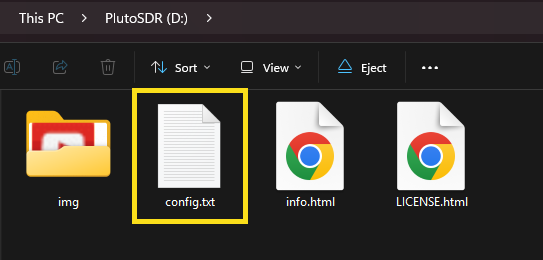

Step 2: Create authentication keys for the SSH protocol if no authentication keys are already created. (check for existing authentication keys for the SSH protocol in “~/.ssh”)
$ ssh-keygen -t ed25519
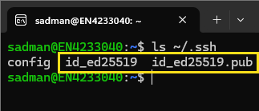
Step 3: Create/update a “config” file for the SSH protocol to list the Pluto SDR concerned. (check for existing config for the SSH protocol in “~/.ssh”)
$ vi ~/.ssh/config
Host pluto_s7
HostName 192.168.7.7 # pluto sdr s7 IP address
User root
IdentityFile ~/.ssh/id_ed25519
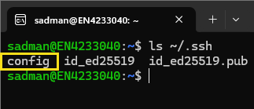
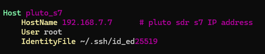
Step 4: Copy the public authentication key over to the Pluto SDR [username: "root", password: "analog"].
$ scp ~/.ssh/id_ed25519.pub root@192.168.7.7:/root/pluto_key.pub
$ scp -O ~/.ssh/id_ed25519.pub root@192.168.7.7:/root/pluto_key.pub
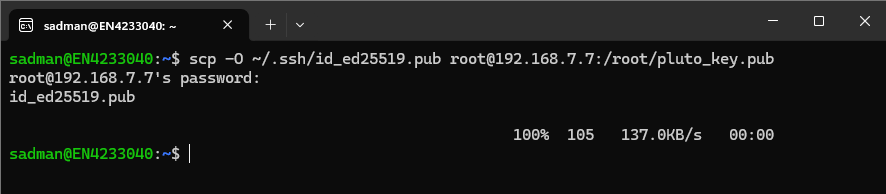
Up to this point, we have completed the steps required to be completed on the host computer. The next steps are to be completed on the Pluto SDR.
Step 5: Connect to the Pluto SDR remotely via SSH (with known username and password one last time).
$ scp -O ~/.ssh/id_ed25519.pub root@192.168.7.7:/root/pluto_key.pub
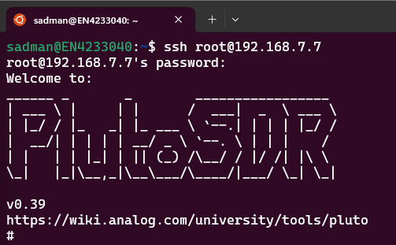
Step 6: Enable device persistent keys for the Pluto SDR for subsequent direct SSH connections.
# device_persistent_keys
# mkdir -p /root/.ssh
# chmod 700 /root/.ssh
# cat /root/pluto_key.pub >> /root/.ssh/authorized_keys
# chmod 600 /root/.ssh/authorized_keys
# rm /root/pluto_key.pub
# cp /root/.ssh/authorized_keys /mnt/jffs2/etc/dropbear/authorized_keys
# rm /root/.ssh/authorized_keys
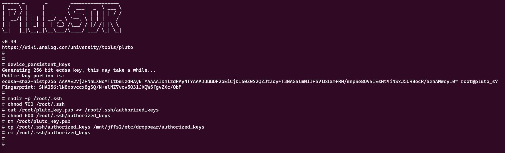
Step 7: Create a shell script in the persistent directory “/mnt/jffs2” called “autorun.sh” The Pluto SDR will execute the commands in this shell script after booting up.
# vi /mnt/jffs2/autorun.sh
#!/bin/sh
# /mnt/jffs2/autorun.sh
# Install persistent SSH authorized_keys at boot.
PERSIST_DIR=/mnt/jffs2/etc/dropbear
KEY_FILE="$PERSIST_DIR/authorized_keys"
if [ -f "$KEY_FILE" ]; then
# For Dropbear builds that expect /etc/dropbear/authorized_keys
mkdir -p /etc/dropbear
cp "$KEY_FILE" /etc/dropbear/authorized_keys
chmod 600 /etc/dropbear/authorized_keys
# For Dropbear builds that expect ~/.ssh/authorized_keys
mkdir -p /root/.ssh
cp "$KEY_FILE" /root/.ssh/authorized_keys
chmod 700 /root/.ssh
chmod 600 /root/.ssh/authorized_keys
fi
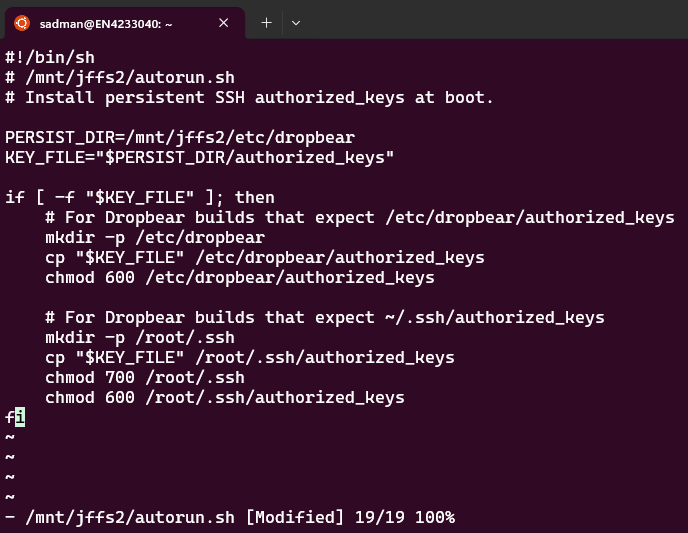
Step 8: Make the shell script executable, reboot the Pluto SDR so that changes can take place and finally, perform a direct SSH now with the updated configuration.
# chmod +x /mnt/jffs2/autorun.sh
# reboot
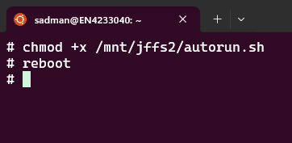
$ ssh pluto_s7

References:
[1] https://wiki.analog.com/university/tools/pluto/devs/embedded_code
Please feel free to reach out to me at msiraj13@asu.edu for any questions or queries regarding this project.